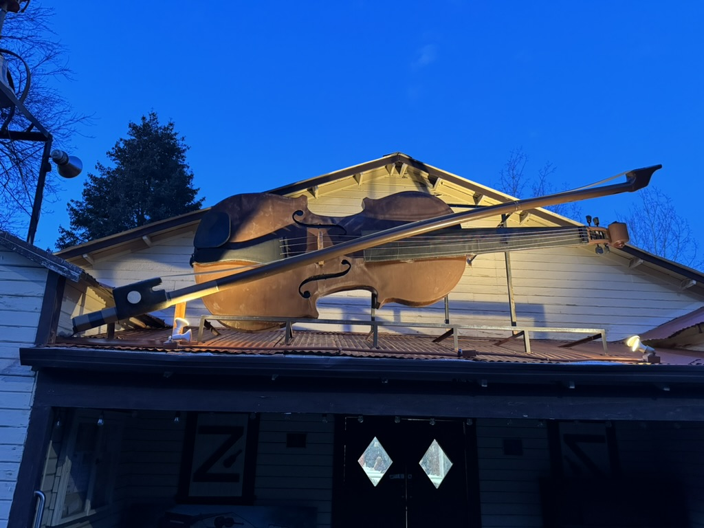
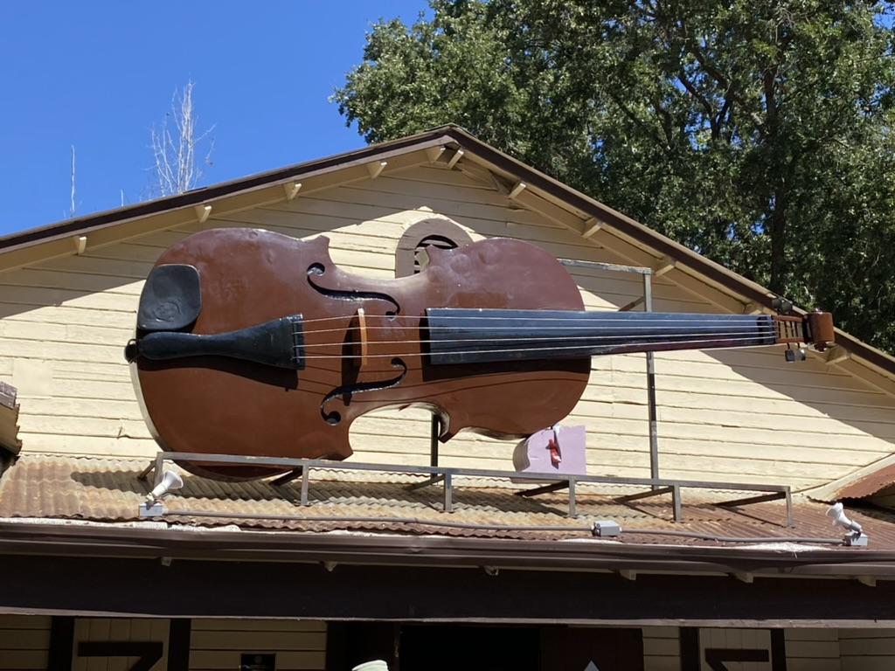
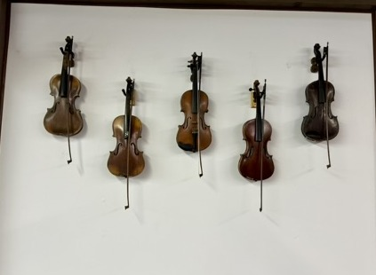

🎻 How Fiddletown Got Its Name

Fiddletown began in 1849, settled by a party from Missouri in the first rush of the Gold Rush, in a valley along Dry Creek in the Sierra Foothills. By the early 1850s it was the trading center for a ring of rich placer camps — American, Loafer, and French Flats, Lone Hill, and others — as the state's landmark record tells it.
And the name? The plaque gives the tradition plainly: the settlers were always fiddling, especially while waiting for the rainy season — hence the name. The landmark record sums it up the same way: the town was called Fiddletown because its residents “were always fiddling.” It is, so far as this desk can establish, the only town in California named for killing time musically.
The name nearly didn't survive. On his trips to Sacramento and San Francisco, a prominent citizen — C. A. Purinton — was jokingly called “the man from Fiddletown,” and, embarrassed, he used his influence to have the state legislature rename the town Oleta in 1878. Where “Oleta” came from, the record keeps two stories: the plaque says it is an Indian name said to mean “Old Home Spring”; other accounts say it was the name of Purinton's daughter. Both are printed here because both are told here.
Oleta lasted until 1932, when the old name was restored — the year the town was registered as California Historical Landmark No. 35 (August 1, 1932). The town's historic district later joined the National Register of Historic Places, in 1978. The writer Bret Harte had already carried the town's fame abroad in his story An Episode of Fiddletown — the town's literary claim to fame, free to read in full at Project Gutenberg, where it opens: “In 1858 Fiddletown considered her a very pretty woman…”
A note on plaques: the weathered tablet in the photograph above is the older Fiddletown-Oleta marker. A second state plaque, erected in 1950, was stolen some years ago; its replacement was unveiled and rededicated on June 27, 2026.
🎻 The Giant Fiddle

Every town gets the emblem it deserves, and Fiddletown's is a fiddle the size of a wagon, mounted with its bow across the gable of the Fiddletown Community Center — the hall where the town gathers for game nights, potlucks, and concerts. You cannot get lost in Fiddletown; you navigate by the fiddle.


🏮 The Chew Kee Store & the Chinese Quarter
Fiddletown's Gold Rush was international. At the lower end of Main Street stood the town's Chinese quarter, and local history accounts put Chinese residents at about a third of the town in the 1860 census — one of the larger Chinese communities in the region. Four buildings of that district remain, and the best known is the Chew Kee Store: a rammed-earth building raised in the early 1850s on West Main Street as the herb shop of Dr. Yee Fung Cheung, a Chinese herbal doctor, and kept by his assistant, Chew Kee. Across the street stands the old Chinese gambling hall. The Chew Kee Store is a museum today, its shelves still holding the herb doctor's world.
🌲 Fiddletown Today
The 2020 census counted 279 people in Fiddletown — a village that has kept its mid-19th-century shape: a short Main Street of Gold Rush buildings under the oaks, in a town that is itself a registered landmark and a National Register historic district. The Fiddletown Preservation Society minds the old buildings; the Community Center, under its giant fiddle, minds everything else. This paper minds the rest — three editions a day.
📚 Sources & Further Reading
Every fact on this page is drawn from the record, and the record is linked here so any reader can check the desk's work:
· California Office of Historic Preservation — Landmark No. 35, Oleta (Old Fiddletown)
· National Register of Historic Places — Fiddletown (Oleta) nomination
· The Historical Marker Database — Fiddletown-Oleta marker
· Fiddletown, California — Wikipedia
· Bret Harte, Tales of the Argonauts (1875) — including “An Episode of Fiddletown” — Project Gutenberg eBook No. 2886
Photographs by Dave Dell'Aquila. Corrections welcome at the Suggestion Box on the front page — a paper that can't be corrected can't be trusted.